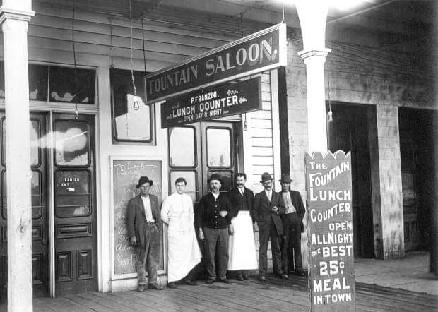

On est en train de tout préparer pour vous.
1875

Plus qu'un restaurant, un vrai morceau d'histoire !
Far West était plus qu’un restaurant - c’était un morceau
d’histoire, une pierre angulaire de la ville où les histoires
étaient tissées dans le tissu de ses murs. Situé au cœur de la
ville animée, Far West était connu pour son atmosphère
incomparable, sa nourriture délicieuse et le mélange unique de
charme du vieux monde et d’innovation moderne. La soirée
d’ouverture de Far West était un spectacle à voir. L’année 1875,
et le salon était animé d’excitation. L’arôme des steaks
grésillants et le bruit des verres tintants remplissaient l’air
alors que les cow-boys et les hommes d’affaires se mêlaient dans
la pièce faiblement éclairée. Les murs étaient ornés d’animaux de
taxidermie et de photographies vintage, donnant à l’endroit un
charme robuste mais accueillant.
1920

Nous poursuivons nôtre aventure.
Au fil de la nuit, le salon s’est transformé en centre
d’activité. Le piano jouait des airs vifs, et le barman versait
des boissons avec précision et flair. Les clients ont ri et dansé,
échangeant des histoires de leurs aventures et mésaventures dans
le far west. Far West est rapidement devenu le lieu de
prédilection de la ville, un endroit où les gens pouvaient se
détendre et se lâcher après une longue journée de travail. En
1920, le Far West avait subi une transformation. Les années folles
avaient apporté avec elles une vague de prospérité et de
changement, et le salon s’était adapté à l’époque. Les murs
étaient maintenant ornés de dessins art déco, la musique avait un
swing jazzy, et le menu s’était élargi pour inclure des cocktails
délicats et une cuisine gastronomique.
2016

Une folle histoire.
Cette nuit-là, un jeune couple s’est promené dans le Far West,
les yeux grands ouverts d’émerveillement. L’homme était vêtu d’un
tailleur, tandis que la femme portait une robe évasée qui
scintillait dans la pénombre. Ils ont pris place au bar et ont
commandé deux martinis, un toast pour l’avenir et les aventures
qui nous attendaient. Pendant qu’ils sirotaient leurs boissons, le
couple a entamé une conversation avec le barman, un homme aguerri
avec un scintillement dans les yeux. Il les régalait de récits du
vieil ouest, de fusillades et de ruées vers l’or, d’escapades
audacieuses et d’amitiés improbables. Le couple a écouté avec
ravissement, s’accrochant à chacun de ses mots comme s’ils
entendaient l’histoire prendre vie sous leurs yeux. La nuit a
continué, et le couple a décidé de passer à un stand confortable
dans le coin. Ils partageaient un repas décadent de filet mignon
et de queue de homard, savourant chaque bouchée comme si c’était
leur dernière. Le rire de la femme résonnait comme de la musique,
et les yeux de l’homme brillaient d’adoration en la regardant. À
la fin de la nuit, le couple savait que le Far West occuperait
toujours une place spéciale dans leur cœur. C’était plus qu’un
restaurant - c’était une capsule temporelle, un portail vers une
époque révolue où tout était possible. Et comme ils quittaient le
salon main dans la main, ils savaient que l’esprit du Far West
continuerait de vivre, un témoignage de la puissance durable de la
bonne nourriture, de la bonne compagnie et des bonnes
histoires.